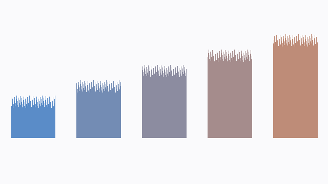

Journal of Synthetic Testing · Volume 112
Synthetic wheat lines show heritable changes in root architecture under mild drought
1Department of Plant Sciences, Example University, Exampletown, EX1 2AB, UK. 2Institute of Soil Ecology, Example Institute, Sample City, EX3 4CD, UK.
Received 2 January 2026 · Accepted 9 March 2026 · Published 14 March 2026
1. Introduction
Wheat yields under rain-fed conditions depend strongly on how quickly roots reach subsoil water. Breeding for deep roots has been attempted for decades with mixed success1, in part because root traits are difficult to phenotype at scale2. Recent work suggests that relatively few loci control the partitioning of root mass with depth3, 4.
Here we combine a field trial, a controlled-environment experiment and transcript profiling to ask whether a single allele at the RtA1 locus is sufficient to shift root mass downward without a yield penalty.
2. Results
Across both watering regimes, rooting depth at anthesis ranged from 41 to 96 cm (Fig. 1a). The distribution was bimodal in the drought treatment and unimodal in the well-watered treatment (Fig. 1b). Lines grouped by RtA1 genotype differed in the deep-root fraction (Fig. 2).
Transcript profiling of the top 2 cm of root identified 34 genes differentially expressed between genotype classes, of which 21 were also differentially expressed in the second season (Supplementary Table 3).

3. Discussion
Our results are consistent with a model in which the RtA1 allele alters the timing of lateral root initiation rather than the total number of lateral roots5. The absence of a yield penalty in the drought treatment is encouraging, although the trial covered only two seasons.
Several caveats apply. Phenotyping was destructive, so we could not follow individual roots over time. The transcript module is correlative, and the causal variant remains to be identified.
4. Methods
4.1 Field trial
Seeds were sown in October 2024 and 2025 in a randomised block design with four replicates. Plots received either ambient rainfall or a rain-out shelter from stem elongation onward.
4.2 Root sampling
Roots were sampled with a 6 cm diameter auger to 100 cm depth in 10 cm increments, washed over a 2 mm sieve and scanned at 600 dpi.